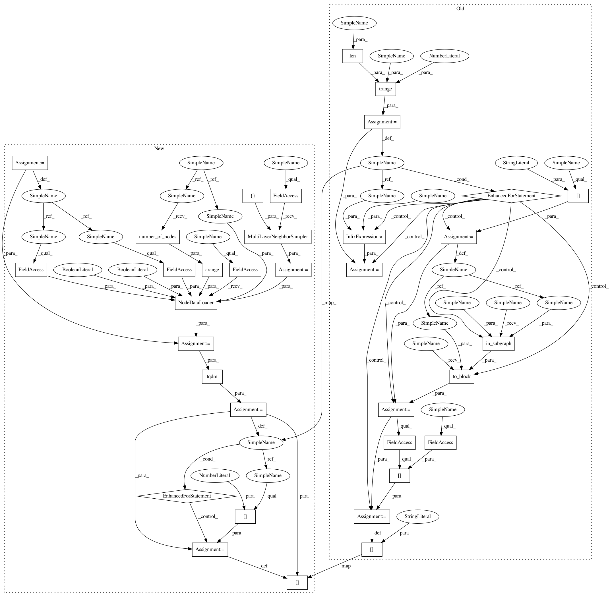

168a88e57070871eef5a9fcdad3ed1a4d708d7bd,examples/pytorch/ogb/ogbn-products/graphsage/main.py,SAGE,inference,#SAGE#Any#Any#Any#Any#,80
Before Change
for l, layer in enumerate(self.layers):
y = th.zeros(g.number_of_nodes(), self.n_hidden if l != len(self.layers) - 1 else self.n_classes)
for start in tqdm.trange(0, len(nodes), batch_size):
end = start + batch_size
batch_nodes = nodes[start:end]
block = dgl.to_block(dgl.in_subgraph(g, batch_nodes), batch_nodes)
input_nodes = block.srcdata[dgl.NID]
h = x[input_nodes].to(device)
h_dst = h[:block.number_of_dst_nodes()]
h = layer(block, (h, h_dst))
if l != len(self.layers) - 1:
h = self.activation(h)
h = self.dropout(h)
y[start:end] = h.cpu()
x = y
return y
def prepare_mp(g):
After Change
for l, layer in enumerate(self.layers):
y = th.zeros(g.number_of_nodes(), self.n_hidden if l != len(self.layers) - 1 else self.n_classes)
sampler = dgl.sampling.MultiLayerNeighborSampler([None])
dataloader = dgl.sampling.NodeDataLoader(
g,
th.arange(g.number_of_nodes()),
sampler,
batch_size=args.batch_size,
shuffle=True,
drop_last=False,
num_workers=args.num_workers)
for input_nodes, output_nodes, blocks in tqdm.tqdm(dataloader):
block = blocks[0]
h = x[input_nodes].to(device)
h_dst = h[:block.number_of_dst_nodes()]
h = layer(block, (h, h_dst))
if l != len(self.layers) - 1:
h = self.activation(h)
h = self.dropout(h)
y[output_nodes] = h.cpu()
x = y
return y
def prepare_mp(g):
In pattern: SUPERPATTERN
Frequency: 4
Non-data size: 34
Instances
Project Name: dmlc/dgl
Commit Name: 168a88e57070871eef5a9fcdad3ed1a4d708d7bd
Time: 2020-07-02
Author: coin2028@hotmail.com
File Name: examples/pytorch/ogb/ogbn-products/graphsage/main.py
Class Name: SAGE
Method Name: inference
Project Name: dmlc/dgl
Commit Name: 168a88e57070871eef5a9fcdad3ed1a4d708d7bd
Time: 2020-07-02
Author: coin2028@hotmail.com
File Name: examples/pytorch/graphsage/train_sampling_multi_gpu.py
Class Name: SAGE
Method Name: inference
Project Name: dmlc/dgl
Commit Name: 168a88e57070871eef5a9fcdad3ed1a4d708d7bd
Time: 2020-07-02
Author: coin2028@hotmail.com
File Name: examples/pytorch/ogb/ogbn-products/gat/main.py
Class Name: GAT
Method Name: inference
Project Name: dmlc/dgl
Commit Name: 168a88e57070871eef5a9fcdad3ed1a4d708d7bd
Time: 2020-07-02
Author: coin2028@hotmail.com
File Name: examples/pytorch/graphsage/train_sampling.py
Class Name: SAGE
Method Name: inference
Project Name: dmlc/dgl
Commit Name: 168a88e57070871eef5a9fcdad3ed1a4d708d7bd
Time: 2020-07-02
Author: coin2028@hotmail.com
File Name: examples/pytorch/ogb/ogbn-products/graphsage/main.py
Class Name: SAGE
Method Name: inference